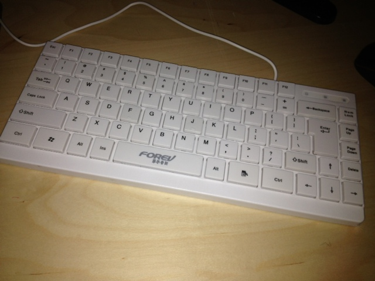

In previous lab we approached very close to get working Usb devices. In this lab we will try to get Usb keyboard working:

First some preparations: as we need automatic drivers loading, we overwrite existing Usb codes in Inferno repository with our files affecting appl/cmd/usb and appl/lib/usb. Our Usbd which we have written as standalone limbo file, we will split into header usb.m, library with API, usb.b and functionality related to hubs and ports logic and driver loading we leave in usbd.b.
It is really cool with Limbo that we can dynamically load usb driver and initialize it directly with objects of usb Dev and then spawn the driver thread:
1pp.dev.mod = load UsbDriver path;
2if (pp.dev.mod == nil)
3 sys->fprint(stderr, "usbd: failed to load %s\n", path);
4else {
5 rv := pp.dev.mod->init(usb, pp.dev);
6 if (rv == -11) {
7 sys->fprint(stderr, "usbd: %s: reenumerate\n", path);
8 pp.dev.mod = nil;
9 #reenumerate = 1;
10 }
11 else if (rv < 0) {
12 sys->fprint(stderr, "usbd: %s:init failed\n", path);
13 pp.dev.mod = nil;
14 }
15 else if (verbose)
16 sys->fprint(stderr, "%s running\n", path);
17}
The UsbDriver we will define as:
1UsbDriver: module
2{
3 init: fn(usb: Usb, dev: ref Usb->Dev): int;
4 shutdown: fn();
5};
Also add a member to Dev adt:
mod: UsbDriver;
The code for automatic driver loading is demonstrated above. It is choosing the driver dis file based on database of Usb drivers: /lib/usbdb. The code related to the database loading etc we will borrow from old Usb framework.
To support the keyboard I took some search through internet and amazingly found the project inferno-bls (https://code.google.com/p/inferno-bls) which is probably done almost same work of porting Plan9 Usbd to Inferno, but early version of about 2010. Because it looks compatible I attempted to use the keyboard driver from that project, but no luck, it goes into deadlock with repeater. Still with disabled repeater it is almost working but hang without reason after few seconds. So, I gave up with the driver and just go to porting Plan9 driver for Usb keybord. C to Limbo porting very straightforward with simplifications of lot of places.
The difference is that usbkbd writes scan codes into “#Ι/kbin”, which is handled in Plan9 by devkbin,kbd kernel fileserver which converts scancodes into kbdputc() calls. By checking 9pi it seems to use the kbd.c from omap which is designed for quote: simulated keyboard input for systems with none (except via uart or usb). It compiles-in into Inferno perfectly.
When I assembled everything I got the keyboard working!
(except one strange bug that I have to put some empty fprint() to stderr just before writing scancode to devkbin – some sync is needed for channels? I may investigate later, or just rewrite kbin into Limbo code, will see)
FILES: